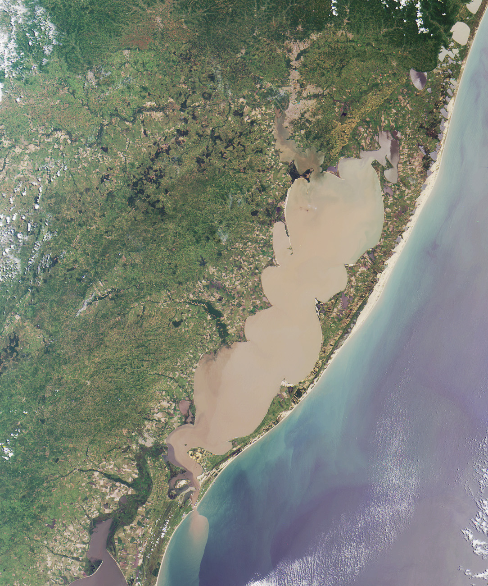

Reprodutibilidade Científica no R
Quem sou?
Me chamo Marybeth Costilla, sou venezuelana formada em Biologia (Ecologia) na Universidade Central de Venezuela (UCV), mestre em Oceanografia Biológica pela Universidade Federal do Rio Grande (PPGOB/FURG), trabalhando com macroalgas marinhas, fitoplâncton e cianobactérias. Atualmente sou doutoranda do PPGOB/FURG, trabalhando com emfoque de sensoriamento remoto para florações de cianobactérias nocivas (FCN) na Lagoa dos Patos
Projeto em andamento
“Dinámica espaço-temporal das florações de Microcystis spp. (Cyanophyceae) na praia do Cassino: origem e consequências”
Um pequeno resumo
Florações de Cianoctérias Nocivas (FCN, ou CyanoHAB’s pelo acrônimo em inglês) causam efeitos ambientais e ecológicos nocivos como redução da transparência da água, contaminação da água potável, aumento de hipóxia e anoxia do fundo aquático, perturbação e alteração das redes tróficas (Qin et al., 2010). Além disso, seus metabólitos tóxicos (cianotoxinas) causam intoxicações graves em aves e mamíferos (inclusive humanos), afetando os sistemas digestivo, endócrino, dérmico e nervoso dependendo do tipo de contato ou/e quantidade ingerida (Paerl & Otten, 2013).
As FCN estão relacionadas a distúrbios ecológicos causados pela urbanização, atividades agrícolas e espécies invasivas (Bykova et al., 2006). Combinadas com mudanças climáticas, estas florações aumentaram em intensidade, frequência e distribuição geográfica, nos últimos anos (Carey et al., 2012; Paerl & Huisman, 2009; Paerl & Paul, 2012; Visser et al., 2016). Resultando em custos econômicos relacionados ao tratamento da água, turismo, recreação e desvalorização das propriedades (Hamilton et al., 2014). Com isto, atividades aquáticas recreativas são realizadas em áreas propensas a florações de cianobactérias. A falta de opções alternativas leva as pessoas a tolerar condições desencorajadoras em termos visuais e olfativos (Chorus & Testai, 2021).
Dentre as principais cianobactérias formadoras de FCN, destacam-se espécies do gênero Microcystis (ordem Chroococales), formadoras de colônias esféricas envoltas em mucilagem e com vesículas de gás que permitem sua flutuação (Silva, 2005). A formação de colônias é considerada importante na ecologia de Microcystis porque pela capacidade de flutuação pode resistir águas turbulentas (Xiao et al., 2018), reduzir a pressão de pastagem do zooplâncton e promover proteção a metais pesados (Wu et al., 2007). Este gênero é conhecido mundialmente por ser um dos gêneros que produz as hepatoxinas microcistinas (MC), uma das cianotoxinas mais comuns e que apresenta mais de 100 variantes conhecidas (Sivonen, 2009; Preece et al., 2016).
 Microcystis aeruginosa
Microcystis aeruginosa
Assim, foram observadas mortes de animais domésticos (gado) e selvagens após exposição a natas (grande concentração de células compactas) ou águas com cianobactérias. Sobretudo foram apontadas condições improprias em águas para uso recreativo (Black et al., 2011; Chorus & Testai, 2021).
Imagens de satélite da Lagoa dos Patos (LP) em condições atmosféricas e hidrológicas favoráveis, identificam no espaço e tempo as florações de Microcystis que atingem o oceano. Portanto, se processarão imagens de satélite obtidas do sensor OLCI no Sentinel-3, para localizar as florações e determinar a sua origem no tempo e espaço. Além, se estimará o risco a balneabilidade da praia do Cassino usando correlações de concentrações dos pigmentos e número de células. Destacando que estas florações ocorrem próximos à os cultivos de camarões, mariscos e peixes (estação de maricultura da FURG), que por bioacumulação de cianotoxinas representam um risco por consumo a moradores e turistas. Se espera, estabelecer uma concentração de clorofila-a para balneabilidade baseado nos limites estabelecidos na CONAMA 357 e a Organização Mundial da Saúde (OMS) para águas de recreação.
Sentinel-3

Objetivos do projeto
Geral
Avaliar as propriedades bio-óticas dos pigmentos das florações de cianobactérias obtidas das imagens de satélite na praia do Cassino como subsídio a balneabilidade.
Específicos
- Estudar as propriedades bio-óticas dos pigmentos clorofila-a e ficocianinas presentes nas florações de cianobactérias, usando duas técnicas óticas.
- Verificar a presença e procedência das florações de Microcystis que alcançam a Praia do Cassino.
- Determinar a balneabilidade na praia do Cassino, por meio de intervalos de concentração de células de Microcystis, usando dados hiperespectrais.